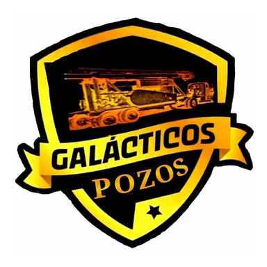
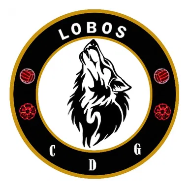

Partido 1 · ejemplo de diseñoConsulta la jornada en la app
Accede al juego para seleccionar marcador y consultar la puntuación
CREA TU EQUIPO
La cancha y el listado conservan la estructura de las referencias. Para hacer cambios reales, entra al juego oficial.
| Equipo | Categoría | Plantilla |
|---|---|---|
 Galácticos de Pozos | Primera Fuerza | Elegir ↗ |
 Lobos CDG | Fútbol local | Elegir ↗ |
 Juventus Juventus | Primera Fuerza | Elegir ↗ |
| Franco FC | Primera Fuerza | Elegir ↗ |
| Boavista FC | Fútbol local | Elegir ↗ |
| Manchester | Veteranos | Elegir ↗ |
| Dep. Hermanos | Fútbol local | Elegir ↗ |
Los nombres son referencias de equipos de la liga. Selecciones, costes y estadísticas reales se consultan dentro del Fantasy actual.
La estructura de predicciones conserva las tarjetas y las casillas del diseño de referencia. Para registrar resultados, abre Pronostica Seis.
Emparejamientos históricos de referencia visual: esta vista no representa la próxima jornada ni calcula puntos. La información oficial aparece en la app.

Accede al generador de cuadros que ya está disponible en tu aplicación, con sus equipos, reglas y controles originales.
Abrir Bracket ↗Gana puntos y consulta tus registros dentro de cada modalidad.
OTRAS MODALIDADES